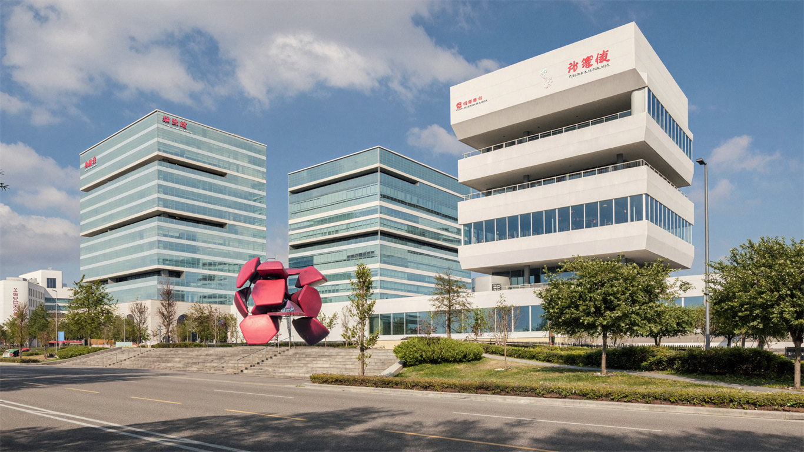
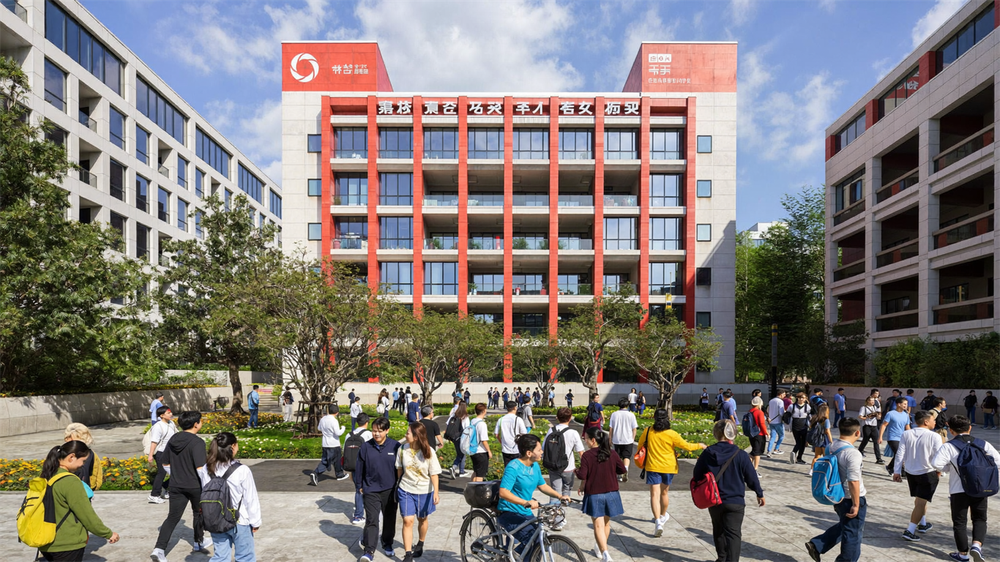
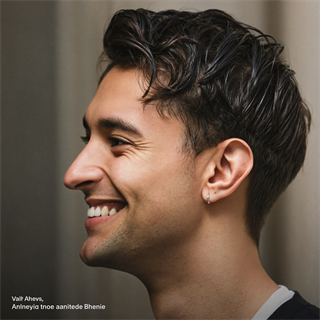

Университеты мирового уровня
Цинхуа, Пекинский, Фудань, Чжэцзянский входят в мировой топ и на равных конкурируют с вузами США и Европы. Диплом котируется по всему миру — особенно в инженерии, IT, медицине и бизнесе.
Обучение в Китае под ключ
Подбираем университет и программу, оформляем документы, визу и стипендию CSC. Начать можно без знания китайского, оплата — поэтапно. Вы просто учитесь — остальное берём на себя.

Помогаем поступить в ведущие университеты Китая
Почему Китай
Мировые рейтинги, доступная стоимость и десятки стипендий — образование уровня США и Европы за адекватные деньги.
Цинхуа, Пекинский, Фудань, Чжэцзянский входят в мировой топ и на равных конкурируют с вузами США и Европы. Диплом котируется по всему миру — особенно в инженерии, IT, медицине и бизнесе.
Учёба и жизнь заметно дешевле, чем в Европе и США: обучение — от нескольких тысяч долларов в год, а со стипендией часто выходит бесплатно. Жильё в общежитии и еда обходятся в скромную сумму.
Государственные, провинциальные и вузовские программы покрывают обучение, проживание, страховку и даже платят ежемесячную стипендию. Реально приехать и учиться, не платя из своего кармана почти ничего.
Сотни программ бакалавриата, магистратуры и аспирантуры ведутся на английском — бизнес, инженерия, медицина, IT. Можно поступить без китайского, а язык подтягивать уже на месте.
Китай — главный торговый партнёр России и СНГ. Знание китайского и местный диплом открывают двери в международные компании и совместные предприятия. Специалист «со знанием Китая» ценится очень высоко.
Скоростные поезда, метро, безналичная оплата везде и очень низкая уличная преступность. Кампусы благоустроены, иностранных студентов много — адаптироваться проще, чем кажется.
Что входит в сопровождение
Вы не разбираетесь в китайской бюрократии в одиночку — на каждом этапе рядом куратор.
Анализируем цели, бюджет и язык обучения, подбираем 3–4 вуза с реальными шансами на поступление и стипендию.
Собираем пакет: аттестат, мотивационное и рекомендательные письма, медсправку, нотариальные переводы на английский/китайский.
Готовим заявку на CSC и вузовские стипендии, помогаем с HSK/IELTS, соблюдаем ранние дедлайны — там, где решается финансирование.
Оформляем визу X1/X2 по приглашению и форме JW, помогаем с билетами и подготовкой к вылету.
Встречаем в аэропорту, помогаем с заселением, регистрацией в полиции, медосмотром и оформлением вида на жительство.
Расскажите о своей ситуации — подберём маршрут поступления лично под вас.
Задать вопросПуть поступления
Понятная дорожная карта — вы всегда знаете, что происходит сейчас и что дальше.
Определяем специальность, язык обучения, город и бюджет. Составляем короткий список из 2–4 вузов и проверяем сроки и требования к HSK.
Загранпаспорт, аттестат/диплом с переводом, мотивационное и рекомендательные письма, медсправка, сертификаты языка (HSK или IELTS/TOEFL).
Подаём онлайн через портал вуза и систему CSC, указывая код университета. Заявку в вуз и на стипендию оформляем одновременно.
Вуз присылает письмо о зачислении и визовую форму JW202/JW201 — основание для оформления визы.
С приглашением и формой JW оформляем визу: X1 — для учёбы дольше 180 дней, X2 — для коротких курсов.
Прилёт к началу семестра, заселение в общежитие и регистрация по месту проживания в течение 24 часов.
В течение 30 дней после въезда обладатели X1 проходят медосмотр и оформляют Residence Permit на весь срок учёбы.
Каталог вузов-партнёров
10 ведущих вузов Китая с рейтингами, направлениями и стоимостью. Полный список — 60+ университетов, спросите у куратора.
Самый престижный гуманитарно-социальный вуз Китая и лидер национальных рейтингов. Сильные школы экономики и права, кампус в историческом сердце Пекина.
Китайский «MIT» и мировой центр инженерии, ИИ и точных наук. Кузница технологической элиты, одна из сильнейших исследовательских баз Азии.
Ведущий вуз финансовой столицы Китая с сильнейшими школами медицины, журналистики и экономики. Космополитичная среда и много англоязычных программ.
Инженерно-технологический флагман Шанхая, «китайский MIT восточного побережья». Силён в машиностроении, медицине и IT, тесно связан с промышленностью.
Огромный многопрофильный вуз в родном городе Alibaba. Сильные инженерия, IT и агробиотех, один из красивейших кампусов у Западного озера.

Небольшой, но мощнейший научный университет под крылом Академии наук Китая — мировой лидер в квантовых вычислениях и физике. Прямой выход в аспирантуру и лаборатории.
Один из старейших и академически «чистых» вузов Китая с фундаментальными школами астрономии и наук о Земле. Самый заметный рост в рейтингах QS последних лет.
Классический университет с мировым лидерством в геодезии и дистанционном зондировании и одним из самых живописных кампусов Китая (знаменит цветением сакуры).
Ведущий инженерно-космический вуз Китая, лидер в аэрокосмосе и робототехнике. Исторические русские корни города и низкая стоимость жизни — бонус для студентов из СНГ.

Главный в Китае вуз для изучения китайского с нуля — идеальный старт перед профильной специальностью. Студенты из 180+ стран, лучшие методики и подготовка к HSK.
В этом городе вузов в списке пока нет — покажем все 60+ на консультации.
Стипендии и гранты
Китай — один из мировых лидеров по числу стипендий для иностранцев. Вот основные программы, с которыми мы работаем.
Главная и самая престижная программа, действует в 270+ вузах. Как правило, полностью покрывает обучение, проживание, медстраховку и включает ежемесячную стипендию (≈3 500 ¥ магистрантам, ≈5 000 ¥ аспирантам). С набора 2026/27 добавлены тест CSCA и требования по HSK/IELTS.
Для изучающих китайский язык и методику преподавания. Покрывает обучение, проживание, страховку, ежемесячную стипендию и оплату экзаменов HSK/HSKK. Подаётся через ближайший Институт Конфуция. Отличный старт для будущих переводчиков и преподавателей.
Пекин, Шанхай, Цзянсу, Чжэцзян, Гуандун учреждают собственные стипендии, чтобы привлекать иностранцев. Бывают полными или частичными, требования обычно мягче, чем у CSC, а конкуренция ниже — хороший запасной вариант.
Многие университеты дают собственные гранты прямо при поступлении — от частичной до полной оплаты обучения. Часто назначаются автоматически по итогам рассмотрения документов, без отдельной заявки. Самый простой способ снизить расходы.
Полезно знать
HSK — государственный экзамен по китайскому. Для программ на китайском нужен HSK 4–5; для англоязычных — не нужен вовсе, только IELTS/TOEFL. Нет китайского, но хотите учиться на нём? Есть подготовительный год (foundation): год языка → HSK → основная программа.
X1 — для учёбы дольше 180 дней: после въезда меняется на вид на жительство. X2 — для коротких курсов до 180 дней. Для обеих нужны письмо о зачислении и форма JW202/JW201.
В среднем 2 500–6 000 ¥/мес (≈$350–850) без учёта обучения. Общежитие 1 000–2 000 ¥, столовая 10–20 ¥ за обед, проездной 150–300 ¥. В небольших городах реально уложиться в 2 500–3 500 ¥.
Осенний набор (старт в сентябре) — основной, документы с марта по июнь, дедлайны по стипендиям раньше (декабрь–февраль). Весенний набор (март) — меньше. Подавайтесь за 2–3 месяца до дедлайна.
Отзывы наших студентов
Реальные истории поступления. Видео- и текстовые отзывы заменяются материалами компании.
«Поступила на инженерную программу со стипендией CSC. Ребята вели меня от документов до заселения — сама бы точно запуталась в JW-формах.»
«Боялся, что без китайского не возьмут. Подобрали англоязычную программу по IT и помогли с IELTS. Учусь второй год, всё честно по договору.»
«Медицина на английском (MBBS) — мечта, в которую не верила. Оформили стипендию, встретили в аэропорту. Отдельное спасибо за помощь с медосмотром.»
«Хотел робототехнику — поступил в лучший вуз Китая по этому профилю. Харбин близко и по духу, и по цене. Куратор на связи до сих пор.»
«Начинала с нуля на языковом курсе, сдала HSK 5 и перешла на профильную программу. Пошагово объяснили весь маршрут заранее.»

«Поступление в SJTU казалось нереальным. Помогли с мотивационным письмом и стипендией Shanghai Government. Оплата шла поэтапно — это очень выручило.»
О компании
Наша команда — выпускники китайских вузов и специалисты по международному образованию. С 2018 года помогли более чем 500 студентам поступить в университеты Китая и получить стипендии.
Работаем официально, по договору, с поэтапной оплатой и понятными гарантиями. У нас есть представитель в Китае — студента встречают в аэропорту и поддерживают на месте, а не «бросают после оплаты».
Частые вопросы
Нет. Сотни программ ведутся на английском — по бизнесу, инженерии, IT, медицине; для них нужен IELTS или TOEFL. Для программ на китайском потребуется HSK (обычно 4–5 уровень). Многие приезжают без китайского и учат его на месте.
Обучение в среднем от нескольких тысяч долларов в год. При этом стипендий очень много (государственные, провинциальные, вузовские) — они покрывают обучение полностью или частично, а иногда ещё проживание и стипендию на жизнь. Со стипендией реально учиться почти бесплатно.
HSK — официальный экзамен по китайскому. Для программ на китайском большинство вузов требуют HSK 4, сильные — HSK 5. Для англоязычных программ HSK не нужен. С 2026 года экзамен переходит на новую систему из девяти уровней, но HSK 1–6 по-прежнему сдаются.
X1 — для учёбы дольше 180 дней: после въезда её в течение 30 дней меняют на вид на жительство. X2 — для коротких программ до 180 дней, менять не нужно, но обычно один въезд. Для полноценного диплома оформляют X1.
В среднем 2 500–6 000 ¥ в месяц в зависимости от города. В небольших городах можно уложиться в 2 500–3 500 ¥, в Пекине и Шанхае дороже. Общежитие, столовая и транспорт стоят недорого.
Да. Дипломы аккредитованных китайских вузов признаются во многих странах, между Россией и Китаем действует соглашение о взаимном признании образования. Для использования диплома дома его обычно легализуют — это стандартная формальность.
Основной набор — осенний (старт в сентябре), документы с марта по июнь, а дедлайны по стипендиям раньше — часто декабрь–февраль. Есть весенний набор (март). Подавайтесь за 2–3 месяца до дедлайна, чтобы успеть на стипендию.
Оставьте контакт — куратор свяжется в течение 15 минут, разберём вашу ситуацию и подберём маршрут поступления. Это бесплатно и ни к чему не обязывает.